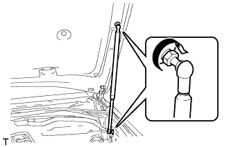
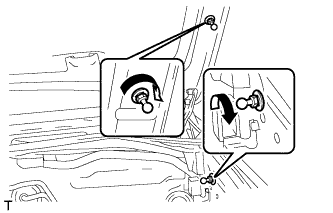
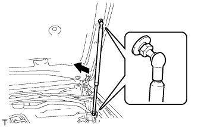

HOOD SUPPORT > INSTALLATION |
| 1. INSTALL HOOD SUPPORT ASSEMBLY LH |
When reusing the hood support.
 |
Install the hood support assembly with the 2 bolts.
When installing a new hood support.
 |
Install the 2 back door stay bolts.
 |
Attach the ball joint and install the hood support assembly.